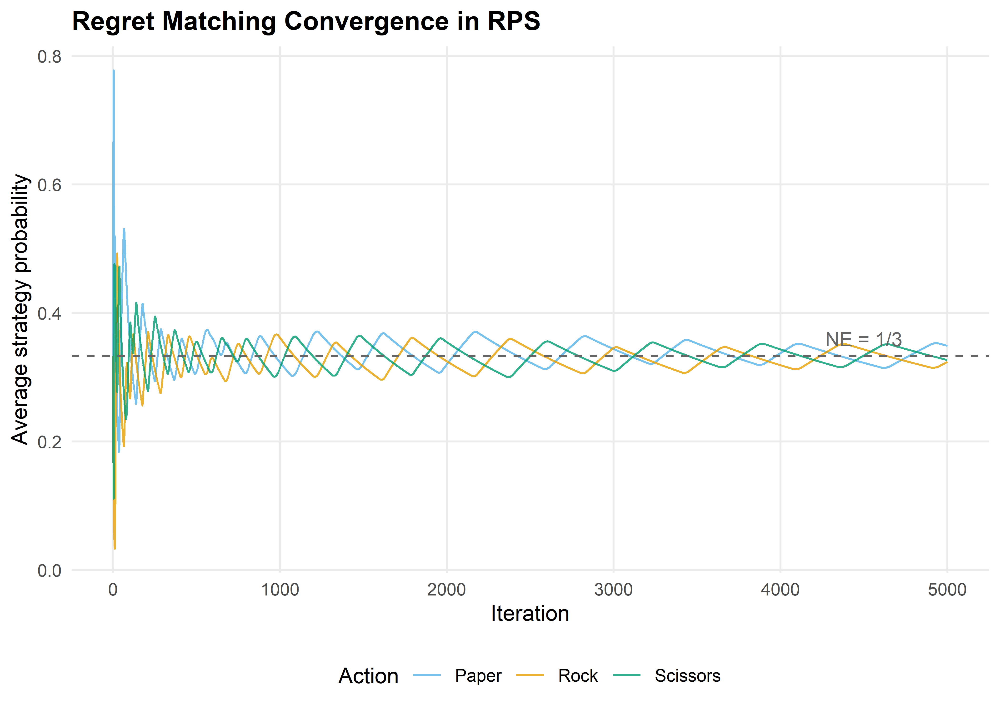
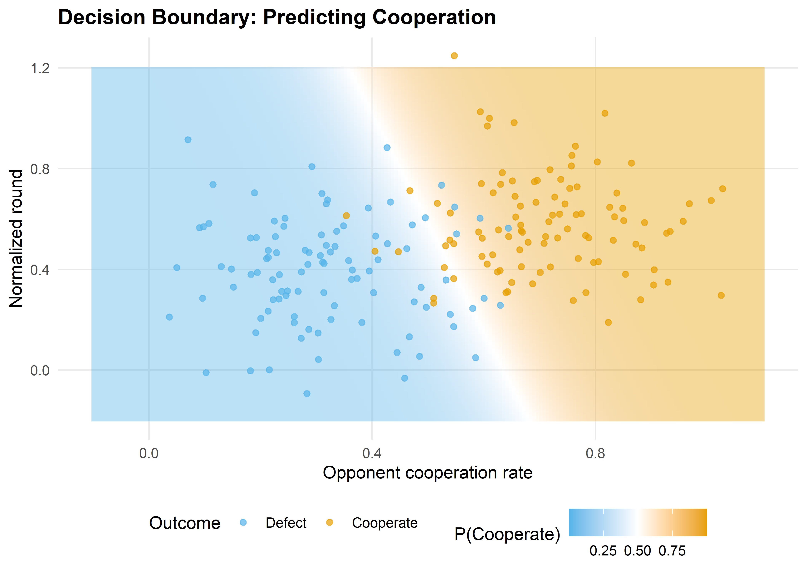

regret_matching <- function(n_iterations = 5000) {
actions <- c("Rock", "Paper", "Scissors")
n_actions <- length(actions)
# Payoff matrix for row player: rows = P1, cols = P2
payoff <- matrix(c( 0, -1, 1,
1, 0, -1,
-1, 1, 0), nrow = 3, byrow = TRUE)
cum_regret_1 <- rep(0, n_actions)
cum_regret_2 <- rep(0, n_actions)
cum_strategy_1 <- rep(0, n_actions)
cum_strategy_2 <- rep(0, n_actions)
strategy_history <- matrix(0, nrow = n_iterations, ncol = n_actions)
get_strategy <- function(cum_regret) {
pos_regret <- pmax(cum_regret, 0)
total <- sum(pos_regret)
if (total > 0) pos_regret / total else rep(1 / n_actions, n_actions)
}
for (t in seq_len(n_iterations)) {
sigma_1 <- get_strategy(cum_regret_1)
sigma_2 <- get_strategy(cum_regret_2)
cum_strategy_1 <- cum_strategy_1 + sigma_1
cum_strategy_2 <- cum_strategy_2 + sigma_2
strategy_history[t, ] <- cum_strategy_1 / sum(cum_strategy_1)
# Sample actions
a1 <- sample(n_actions, 1, prob = sigma_1)
a2 <- sample(n_actions, 1, prob = sigma_2)
# Update regrets
for (a in seq_len(n_actions)) {
cum_regret_1[a] <- cum_regret_1[a] + payoff[a, a2] - payoff[a1, a2]
cum_regret_2[a] <- cum_regret_2[a] + (-payoff[a1, a]) - (-payoff[a1, a2])
}
}
avg_strategy_1 <- cum_strategy_1 / sum(cum_strategy_1)
avg_strategy_2 <- cum_strategy_2 / sum(cum_strategy_2)
list(
avg_strategy_1 = setNames(avg_strategy_1, actions),
avg_strategy_2 = setNames(avg_strategy_2, actions),
history = strategy_history
)
}25 Machine Learning Foundations for Game Theory
Abstract
Supervised learning as a game against nature, regret minimization and regret matching, feature engineering for game-theoretic data, and cross-validation for strategic predictions.
Keywords
machine learning, regret matching, supervised learning, logistic regression, cross-validation
26 ML Foundations for Game Theory
Learning objectives
- Frame supervised learning as a two-player game between a learner and nature.
- Implement regret matching from scratch and show convergence to Nash equilibrium in Rock-Paper-Scissors.
- Construct features from game-theoretic data suitable for prediction tasks.
- Apply cross-validation to evaluate predictive models of strategic behavior.
26.1 Motivation
Machine learning and game theory share a deep intellectual kinship. At its core, supervised learning is a minimax problem: a learner selects a hypothesis to minimize worst-case loss, while “nature” (the data-generating process) selects inputs that expose the learner’s weaknesses. This adversarial framing is not merely a metaphor — it is the foundation of online learning theory and connects directly to regret minimization, a concept central to modern algorithmic game theory.
This chapter bridges the two fields. We show how regret matching — a simple no-regret algorithm — converges to Nash equilibrium in two-player zero-sum games, then pivot to practical ML tools (logistic regression, cross-validation) applied to game-theoretic prediction tasks. The goal is to equip the reader with ML techniques that will appear throughout the remaining chapters on reinforcement learning, self-play, and counterfactual regret minimization.
26.2 Theory
26.2.1 Supervised learning as a game
In the statistical learning framework, a learner observes training data \(\{(x_i, y_i)\}_{i=1}^n\) drawn from an unknown distribution \(\mathcal{D}\) and selects a hypothesis \(h\) from a class \(\mathcal{H}\) to minimize expected loss:
\[ \min_{h \in \mathcal{H}} \; \mathbb{E}_{(x,y) \sim \mathcal{D}} \left[ \ell(h(x), y) \right] \tag{26.1}\]
This has a natural game-theoretic interpretation. The learner is Player 1, choosing \(h\). Nature is Player 2, choosing \((x, y)\). The loss function \(\ell\) is the payoff matrix — the learner minimizes it, nature maximizes it. The minimax theorem guarantees that in this zero-sum formulation, optimal learning strategies exist.
26.2.2 Online learning and regret
In online learning, decisions are made sequentially. At each round \(t\), the learner chooses an action \(a_t\) from a set \(\mathcal{A}\), then observes the loss vector \(\ell_t(a)\) for all actions. The cumulative regret of not having played action \(a\) is:
\[ R_T(a) = \sum_{t=1}^{T} \ell_t(a_t) - \sum_{t=1}^{T} \ell_t(a) \tag{26.2}\]
A no-regret algorithm ensures that \(\max_a R_T(a) / T \to 0\) as \(T \to \infty\). The celebrated connection to game theory is: if both players in a zero-sum game use no-regret algorithms, their time-averaged strategies converge to a Nash equilibrium (Cesa-Bianchi & Lugosi, 2006).
26.2.3 Regret matching
Regret matching (Hart & Mas-Colell, 2000) is one of the simplest no-regret algorithms. At each round, the player computes cumulative regret for each action and plays proportionally to positive regrets:
\[ \sigma_t(a) = \begin{cases} R_t^+(a) \,/\, \sum_{a'} R_t^+(a') & \text{if } \sum_{a'} R_t^+(a') > 0 \\ 1 / |\mathcal{A}| & \text{otherwise} \end{cases} \tag{26.3}\]
where \(R_t^+(a) = \max(0, R_t(a))\). This algorithm is the building block of counterfactual regret minimization (CFR), covered in ?sec-cfr-poker.
26.2.4 Feature representation for game-theoretic data
When applying ML to strategic settings, feature engineering matters. Common features include:
- History features: opponent’s action frequencies over a sliding window.
- Payoff features: expected payoff under each action given an opponent model.
- State features: round number, cumulative scores, cooperation rate.
26.3 Implementation in R
26.3.1 Regret matching for Rock-Paper-Scissors
set.seed(42)
rm_result <- regret_matching(n_iterations = 5000)rm_df <- tibble(
iteration = rep(1:5000, 3),
action = rep(c("Rock", "Paper", "Scissors"), each = 5000),
probability = c(rm_result$history[, 1],
rm_result$history[, 2],
rm_result$history[, 3])
)
p_regret <- ggplot(rm_df, aes(x = iteration, y = probability, colour = action)) +
geom_line(alpha = 0.8) +
geom_hline(yintercept = 1/3, linetype = "dashed", colour = "grey40") +
scale_colour_manual(values = c("Rock" = okabe_ito[1],
"Paper" = okabe_ito[2],
"Scissors" = okabe_ito[3])) +
theme_publication() +
labs(title = "Regret Matching Convergence in RPS",
x = "Iteration", y = "Average strategy probability",
colour = "Action") +
annotate("text", x = 4500, y = 0.36, label = "NE = 1/3",
colour = "grey40", size = 3.5)
p_regret
save_pub_fig(p_regret, "regret-matching-convergence", width = 7, height = 5)
The average strategies converge to \((1/3, 1/3, 1/3)\) — the unique Nash equilibrium of Rock-Paper-Scissors. This confirms the theoretical guarantee: regret matching is a no-regret algorithm, and when both players use it, the time-averaged play converges to NE.
cat("Player 1 average strategy:\n")#> Player 1 average strategy:print(round(rm_result$avg_strategy_1, 4))#> Rock Paper Scissors
#> 0.3240 0.3491 0.3269cat("\nPlayer 2 average strategy:\n")#>
#> Player 2 average strategy:print(round(rm_result$avg_strategy_2, 4))#> Rock Paper Scissors
#> 0.3357 0.3212 0.343126.3.2 Decision boundary visualization
To illustrate supervised learning in a game-theoretic context, consider a binary classification task: given two features derived from game play, predict an outcome. We fit a logistic regression model using glm and visualize the decision boundary.
set.seed(123)
n <- 200
# Simulate two player types: cooperators (y=1) and defectors (y=0)
# Feature 1: opponent's cooperation rate; Feature 2: round number (normalized)
x1_coop <- rnorm(n/2, mean = 0.7, sd = 0.15)
x2_coop <- rnorm(n/2, mean = 0.6, sd = 0.2)
x1_def <- rnorm(n/2, mean = 0.3, sd = 0.15)
x2_def <- rnorm(n/2, mean = 0.4, sd = 0.2)
game_data <- tibble(
opp_coop_rate = c(x1_coop, x1_def),
normalized_round = c(x2_coop, x2_def),
cooperate = factor(c(rep(1, n/2), rep(0, n/2)))
)
model <- glm(cooperate ~ opp_coop_rate + normalized_round,
data = game_data, family = binomial)# Create prediction grid
grid <- expand.grid(
opp_coop_rate = seq(-0.1, 1.1, length.out = 200),
normalized_round = seq(-0.2, 1.2, length.out = 200)
)
grid$prob <- predict(model, newdata = grid, type = "response")
p_boundary <- ggplot() +
geom_tile(data = grid, aes(x = opp_coop_rate, y = normalized_round,
fill = prob), alpha = 0.4) +
scale_fill_gradient2(low = okabe_ito[2], mid = "white", high = okabe_ito[1],
midpoint = 0.5, name = "P(Cooperate)") +
geom_point(data = game_data, aes(x = opp_coop_rate, y = normalized_round,
colour = cooperate),
size = 1.5, alpha = 0.7) +
scale_colour_manual(values = c("0" = okabe_ito[2], "1" = okabe_ito[1]),
labels = c("Defect", "Cooperate"), name = "Outcome") +
theme_publication() +
labs(title = "Decision Boundary: Predicting Cooperation",
x = "Opponent cooperation rate", y = "Normalized round")
p_boundary
save_pub_fig(p_boundary, "decision-boundary-cooperation", width = 7, height = 5)
26.4 Worked example
26.4.1 Predicting cooperation in the iterated Prisoner’s Dilemma
We simulate an iterated Prisoner’s Dilemma and use logistic regression to predict whether a player cooperates on a given round, based on observable features.
set.seed(42)
n_rounds <- 200
n_pairs <- 50
# Simulate IPD data: each pair plays n_rounds
ipd_data <- map_dfr(seq_len(n_pairs), function(pair_id) {
# Each player has a base cooperation probability that drifts with opponent behavior
p1_coop <- 0.5
p2_coop <- 0.5
records <- vector("list", n_rounds)
for (r in seq_len(n_rounds)) {
a1 <- rbinom(1, 1, p1_coop)
a2 <- rbinom(1, 1, p2_coop)
# Tit-for-tat-ish adaptation
p1_coop <- 0.3 * p1_coop + 0.7 * (0.2 + 0.6 * a2)
p2_coop <- 0.3 * p2_coop + 0.7 * (0.2 + 0.6 * a1)
records[[r]] <- tibble(pair = pair_id, round = r, p1_action = a1, p2_action = a2)
}
bind_rows(records)
})
# Rolling mean over previous 3 rounds (base R, no slider)
roll_mean3 <- function(x) {
n <- length(x)
out <- rep(NA_real_, n)
for (i in 4:n) out[i] <- mean(x[(i - 3):(i - 1)])
out
}
# Engineer features for predicting P1's cooperation
ipd_features <- ipd_data |>
group_by(pair) |>
mutate(
opp_coop_last3 = roll_mean3(p2_action),
own_coop_last3 = roll_mean3(p1_action),
round_norm = round / n_rounds
) |>
ungroup() |>
filter(round > 4)# Split train/test by pair (avoid data leakage)
train_pairs <- sample(n_pairs, 35)
train <- ipd_features |> filter(pair %in% train_pairs)
test <- ipd_features |> filter(!pair %in% train_pairs)
ipd_model <- glm(p1_action ~ opp_coop_last3 + own_coop_last3 + round_norm,
data = train, family = binomial)
cat("Logistic regression coefficients:\n")#> Logistic regression coefficients:print(round(coef(ipd_model), 3))#> (Intercept) opp_coop_last3 own_coop_last3 round_norm
#> -1.346 2.678 0.018 -0.048# 5-fold cross-validation by pair
folds <- split(train_pairs, cut(seq_along(train_pairs), 5, labels = FALSE))
cv_accuracy <- map_dbl(folds, function(held_out) {
cv_train <- ipd_features |> filter(pair %in% setdiff(train_pairs, held_out))
cv_test <- ipd_features |> filter(pair %in% held_out)
fit <- glm(p1_action ~ opp_coop_last3 + own_coop_last3 + round_norm,
data = cv_train, family = binomial)
preds <- ifelse(predict(fit, newdata = cv_test, type = "response") > 0.5, 1, 0)
mean(preds == cv_test$p1_action)
})
cat(sprintf("5-fold CV accuracy: %.1f%% (SD: %.1f%%)\n",
100 * mean(cv_accuracy), 100 * sd(cv_accuracy)))#> 5-fold CV accuracy: 66.6% (SD: 1.1%)test_preds <- predict(ipd_model, newdata = test, type = "response")
test_class <- ifelse(test_preds > 0.5, 1, 0)
test_accuracy <- mean(test_class == test$p1_action)
cat(sprintf("Test set accuracy: %.1f%%\n", 100 * test_accuracy))#> Test set accuracy: 68.2%cat(sprintf("Baseline (always predict majority class): %.1f%%\n",
100 * max(mean(test$p1_action), 1 - mean(test$p1_action))))#> Baseline (always predict majority class): 52.3%The opponent’s recent cooperation rate is the strongest predictor — consistent with tit-for-tat-like dynamics. Cross-validation by pair (rather than by round) prevents data leakage from correlated within-pair observations, a critical methodological point when applying ML to repeated games.
26.5 Extensions
- Multiplicative weights update is an alternative no-regret algorithm with tighter theoretical bounds. See Arora et al. (2012) for a survey of the multiplicative weights method and its connections to game theory.
- Counterfactual regret minimization (?sec-cfr-poker) extends regret matching to extensive-form games, powering superhuman poker AI.
- Reinforcement learning (Chapter 27) replaces the fixed-loss setting of online learning with sequential decision-making under an MDP.
- Feature engineering for strategic data is an active research area: deep learning approaches learn features automatically, but interpretable features (cooperation rates, payoff summaries) remain valuable for analysis.
Exercises
Regret matching in Prisoner’s Dilemma. Implement regret matching for the one-shot Prisoner’s Dilemma with payoffs \(T = 5, R = 3, P = 1, S = 0\). To what strategy profile does the average play converge? Explain why this differs from RPS.
Regularization and overfitting. Add polynomial features (quadratic and interaction terms) to the IPD logistic regression model. Compare training and test accuracy. Does the richer model overfit? Use cross-validation to select the best model.
Window size sensitivity. In the worked example, features use a 3-round sliding window. Repeat the analysis with window sizes of 1, 5, 10, and 20. Plot cross-validation accuracy versus window size and explain the trade-off between responsiveness and stability.
Solutions appear in Appendix E.
Arora, S., Hazan, E., & Kale, S. (2012). The multiplicative weights update method: A meta-algorithm and applications. Theory of Computing, 8(1), 121–164. https://doi.org/10.4086/toc.2012.v008a006
Cesa-Bianchi, N., & Lugosi, G. (2006). Prediction, learning, and games. Cambridge University Press.
Hart, S., & Mas-Colell, A. (2000). A simple adaptive procedure leading to correlated equilibrium. Econometrica, 68(5), 1127–1150. https://doi.org/10.1111/1468-0262.00153